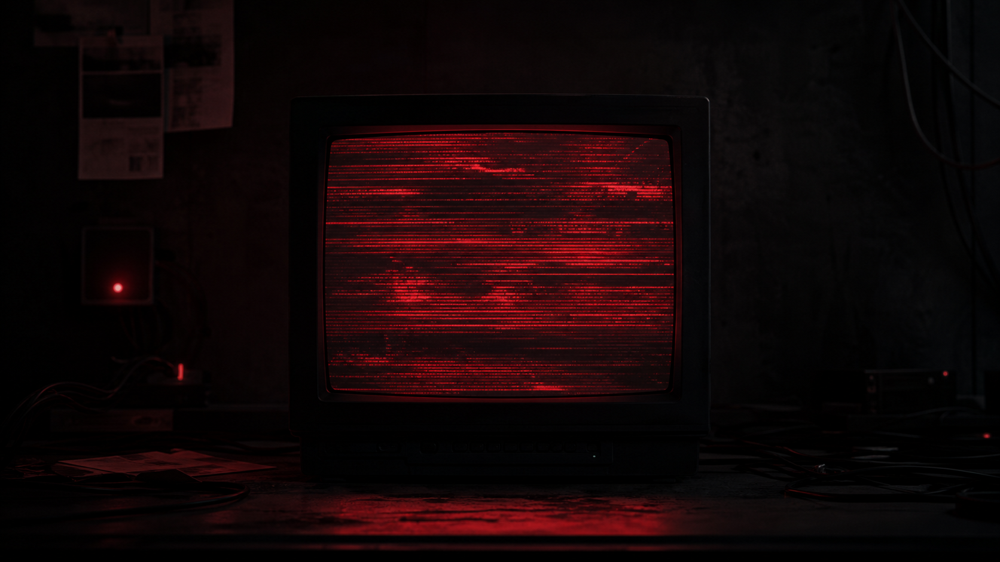

PRIVATE RELAY / ENCRYPTED
NODE: PL-09 / ACCESS LEVEL: RESTRICTED
THE RED ROOM
Nie oglądasz transmisji. Otrzymujesz wyłącznie sygnał.
LIVE RELAY00:17:43

SESSION 04.26/NO ARCHIVE/ONE VIEWER
NODE: PL-09 / ACCESS LEVEL: RESTRICTED
Nie oglądasz transmisji. Otrzymujesz wyłącznie sygnał.
